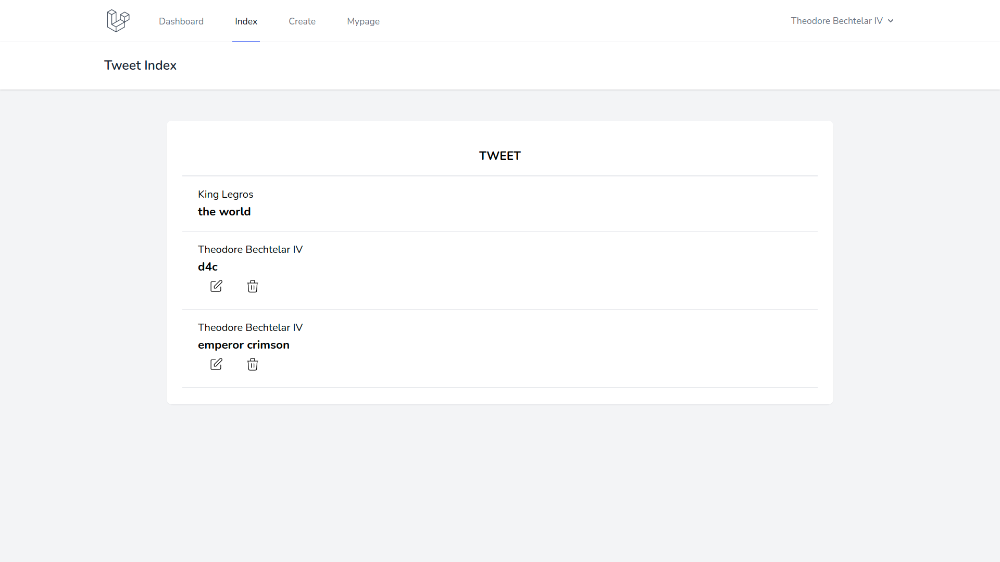

投稿者名の表示（多対 1 のデータ）
一覧ページでログインユーザのみが編集と削除を行えるようにしたが，このままでは tweet がどのユーザによって行われたのかを画面から判別できない．
そこで，各 tweet にユーザ名を表示して tweet の識別ができるようにする．
多対 1 のデータ構造
tweet とユーザの関係は「多対 1」である（1 対多の逆）．
Laravel では，この場合も連携ができる機能が準備されている．
設定はモデル部分に記述する．app/Http/Models/Tweet.phpを以下のように編集する．
子のモデルにbelongsTo()を設定することで親のモデルを指定することができる．これで「Tweet モデルは User モデルに属している」状態となる．
// app/Http/Models/Tweet.php
<?php
namespace App\Models;
use Illuminate\Database\Eloquent\Factories\HasFactory;
use Illuminate\Database\Eloquent\Model;
class Tweet extends Model
{
use HasFactory;
protected $guarded = [
'id',
'created_at',
'updated_at',
];
public static function getAllOrderByDeadline()
{
return self::orderBy('updated_at', 'desc')->get();
}
// ↓追加
public function user()
{
return $this->belongsTo(User::class);
}
}
連携したデータの呼び出し
モデルに多対 1 の関係を指定できたので，user関数を用いて子のデータから親のデータを呼び出せるようになった．
ビューファイルでは tweet の内容を表示しているので，$tweet->user->nameのように指定することで親データ（この場合はname）を取得できる．
resources/views/tweet/index.blade.phpを以下のように編集する．
<!-- resources/views/tweet/index.blade.php -->
<x-app-layout>
<x-slot name="header">
<h2 class="font-semibold text-xl text-gray-800 leading-tight">
{{ __('Tweet Index') }}
</h2>
</x-slot>
<div class="py-12">
<div class="max-w-7xl mx-auto sm:w-10/12 md:w-8/10 lg:w-8/12">
<div class="bg-white overflow-hidden shadow-sm sm:rounded-lg">
<div class="p-6 bg-white border-b border-gray-200">
<table class="text-center w-full border-collapse">
<thead>
<tr>
<th class="py-4 px-6 bg-grey-lightest font-bold uppercase text-lg text-grey-dark border-b border-grey-light">tweet</th>
</tr>
</thead>
<tbody>
@foreach ($tweets as $tweet)
<tr class="hover:bg-grey-lighter">
<td class="py-4 px-6 border-b border-grey-light">
<a href="{{ route('tweet.show',$tweet->id) }}">
<!-- ↓追加 -->
<p class="text-left text-grey-dark">{{$tweet->user->name}}</p>
<h3 class="text-left font-bold text-lg text-grey-dark">{{$tweet->tweet}}</h3>
</a>
<div class="flex">
@if ($tweet->user_id === Auth::user()->id)
<!-- 更新ボタン -->
<form action="{{ route('tweet.edit',$tweet->id) }}" method="GET" class="text-left">
@csrf
<button type="submit" class="mr-2 ml-2 text-sm hover:bg-gray-200 hover:shadow-none text-white py-1 px-2 focus:outline-none focus:shadow-outline">
<svg class="h-6 w-6 text-gray-500" fill="none" viewBox="0 0 24 24" stroke="black">
<path stroke-linecap="round" stroke-linejoin="round" stroke-width="1" d="M11 5H6a2 2 0 00-2 2v11a2 2 0 002 2h11a2 2 0 002-2v-5m-1.414-9.414a2 2 0 112.828 2.828L11.828 15H9v-2.828l8.586-8.586z" />
</svg>
</button>
</form>
<!-- 削除ボタン -->
<form action="{{ route('tweet.destroy',$tweet->id) }}" method="POST" class="text-left">
@method('delete')
@csrf
<button type="submit" class="mr-2 ml-2 text-sm hover:bg-gray-200 hover:shadow-none text-white py-1 px-2 focus:outline-none focus:shadow-outline">
<svg class="h-6 w-6 text-gray-500" fill="none" viewBox="0 0 24 24" stroke="black">
<path stroke-linecap="round" stroke-linejoin="round" stroke-width="1" d="M19 7l-.867 12.142A2 2 0 0116.138 21H7.862a2 2 0 01-1.995-1.858L5 7m5 4v6m4-6v6m1-10V4a1 1 0 00-1-1h-4a1 1 0 00-1 1v3M4 7h16" />
</svg>
</button>
</form>
@endif
</div>
</td>
</tr>
@endforeach
</tbody>
</table>
</div>
</div>
</div>
</div>
</x-app-layout>
動作確認
一覧画面で各 tweet に投稿者名が表示されれば OK！
